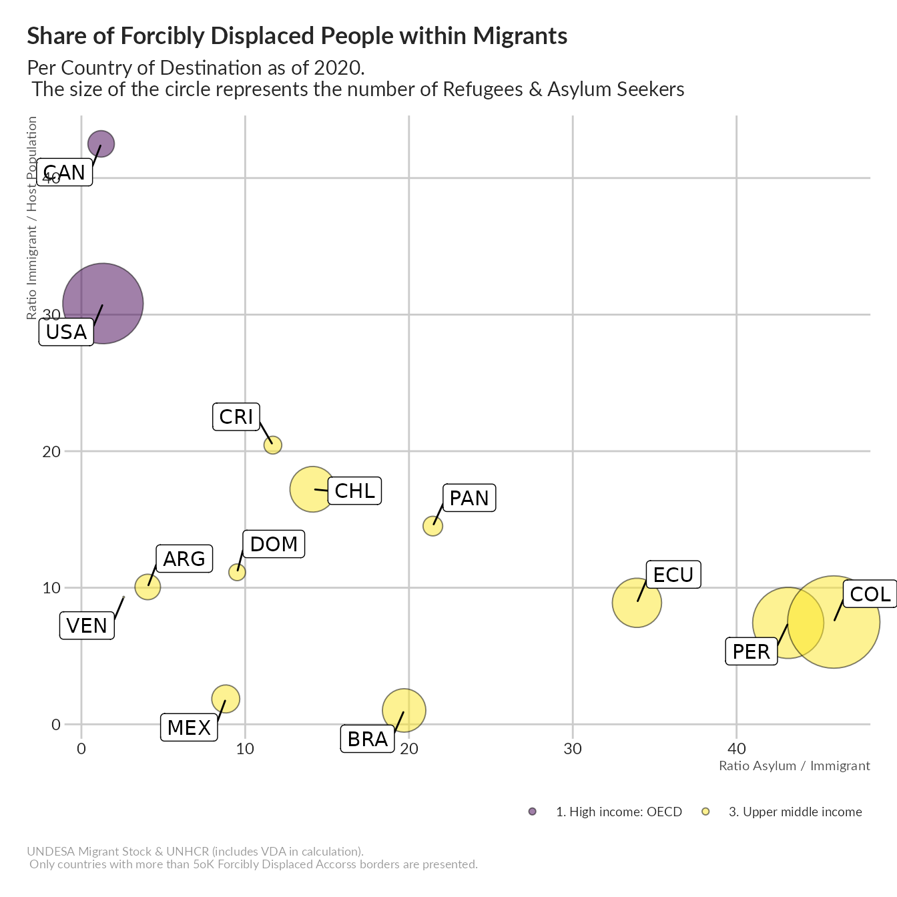

vignettes/Migrant_and_Forcible_Displacement.Rmd
Migrant_and_Forcible_Displacement.Rmd
# Population, GDP & GNP per Capita from WorldBank
wb_data <- wbstats::wb( indicator = c("SP.POP.TOTL", "NY.GDP.MKTP.CD", "NY.GDP.PCAP.CD", "NY.GNP.PCAP.CD"),
startdate = 1990, enddate = 2020, return_wide = TRUE)
# Renaming variables for further matching
names(wb_data)[1] <- "iso_3"
names(wb_data)[2] <- "Year"
wb_data$Year <- as.numeric(wb_data$Year)
thisbureau <- "Americas"
displaced <- dplyr::left_join( x= unhcrdatapackage::end_year_population_totals_long,
y= unhcrdatapackage::reference,
by = c("CountryAsylumCode" = "iso_3")) %>%
filter(Population.type %in% c("ASY", "REF", "VDA")) %>%
mutate( iso_3 = CountryAsylumCode)%>%
group_by(Year, iso_3,CountryAsylumName, UNHCRBureau, hcr_subregion, INCOME_GRP) %>%
summarise(Asylum_Refugee_in = sum(Value) ) %>%
## Joint for calculation of Immigration
dplyr::left_join(
dplyr::left_join( x= unhcrdatapackage::end_year_population_totals_long,
y= unhcrdatapackage::reference,
by = c("CountryOriginCode" = "iso_3")) %>%
filter(Population.type %in% c("ASY", "REF", "VDA")) %>%
mutate( iso_3 = CountryOriginCode)%>%
group_by(Year, iso_3,CountryOriginName, UNHCRBureau, hcr_subregion, INCOME_GRP) %>%
summarise(Asylum_Refugee_out = sum(Value) ),
by = c("iso_3", "Year", "UNHCRBureau", "hcr_subregion", "INCOME_GRP")) %>%
# filter(!(is.na(UNHCRBureau))) %>%
# filter( UNHCRBureau == "Americas" ) %>%
# filter( hcr_subregion == "Latin America") %>%
as.data.frame()
#str(displaced)
# ref <- unhcrdatapackage::reference
migrant <- dplyr::left_join( x= unhcrdatapackage::migrants,
y= unhcrdatapackage::reference,
by = c("CountryDestinationM49" = "M49_code")) %>%
group_by(Year, iso_3,CountryDestinationName, UNHCRBureau, hcr_subregion, INCOME_GRP) %>%
summarise(Emigrant = sum(Value) ) %>%
filter( !(is.na(iso_3))) %>%
## Joint for calculation of Immigration
dplyr::left_join(
dplyr::left_join( x= unhcrdatapackage::migrants,
y= unhcrdatapackage::reference,
by = c("CountryOriginM49" = "M49_code")) %>%
group_by(Year, iso_3,CountryOriginName, UNHCRBureau, hcr_subregion, INCOME_GRP) %>%
summarise(Immigrant = sum(Value) ),
by = c("iso_3", "Year", "UNHCRBureau", "hcr_subregion", "INCOME_GRP")) %>%
## Calculate Net migration
mutate( netmigration = Emigrant - Immigrant ) %>%
# filter(!(is.na(UNHCRBureau))) %>%
# filter( UNHCRBureau == "Americas" )%>%
# filter( hcr_subregion == "Latin America") %>%
as.data.frame()
migrant$Year <- as.numeric(migrant$Year)
migProfile <- migrant %>%
dplyr::left_join( displaced, by = c("Year","iso_3", "UNHCRBureau", "hcr_subregion", "INCOME_GRP")) %>%
dplyr::left_join( wb_data, by = c("Year","iso_3"))%>%
## Calculate a few ration
mutate( ratioAsylum_Refugee_in = (Asylum_Refugee_in / SP.POP.TOTL)*100,
ratioImmigrant = (Immigrant / SP.POP.TOTL)*100,
ratioAsylum_Immigrant = (Asylum_Refugee_in / Immigrant)*100,
ratioAsylum_Refugee_out = (Asylum_Refugee_out / SP.POP.TOTL)*100,
ratioEmigrant = (Emigrant / SP.POP.TOTL)*100,
ratioAsylum_Emigrant = (Asylum_Refugee_out / Emigrant)*100,
ratioNetMigration = (netmigration / SP.POP.TOTL)*100 ) %>%
select( Year, iso_3, country,
UNHCRBureau, hcr_subregion,INCOME_GRP,
SP.POP.TOTL,
Asylum_Refugee_in, ratioAsylum_Refugee_in,
Immigrant, ratioImmigrant,
Asylum_Refugee_out, ratioAsylum_Refugee_out,
Emigrant, ratioEmigrant,
ratioAsylum_Immigrant,
ratioAsylum_Emigrant,
ratioNetMigration) %>%
# filter(Year == 2020) %>%
arrange(ratioNetMigration ) %>%
filter( SP.POP.TOTL > 3000000 )
thismigProfile <- migProfile %>%
filter(!(is.na(UNHCRBureau))) %>%
filter( UNHCRBureau == thisbureau )%>%
#filter( hcr_subregion == "Latin America") %>%
#filter( Year > 2000)
filter( Year == 2020) %>%
filter( Asylum_Refugee_in > 50000 )
#names(migProfile)
# ggplot(thismigProfile,
# aes(x= reorder(country, pcnetmigration),
# y= pcnetmigration,
# label= pcnetmigration,
# fill = Year)) +
# # facet_wrap( ~ Year, ncol =4) +
# geom_bar(stat='identity',
# aes(fill= Year,
# #fill= pcAsylum_Refugee,
# color= pcAsylum_Refugee),
# position="dodge" ) +
# coord_flip() +
# scale_color_brewer( type = "seq") +
# labs(subtitle="Net Migration",
# title= "Net Migration",
# x="",
# y = "",
#
# caption="UNDESA")
ggplot(thismigProfile,
aes(x= ratioAsylum_Immigrant,
y= ratioImmigrant,
size= Asylum_Refugee_in,
fill= INCOME_GRP,
label = iso_3)) +
geom_point(alpha=0.5,
shape=21,
color="black") +
scale_size(range = c(.1, 24), guide=FALSE, ## Do not show Legend
name="# of Forcibly Displaced People") +
viridis::scale_fill_viridis(discrete=TRUE,
name="Country Income Classification") +
# facet_wrap( vars(Year ), ncol = 2) +
coord_cartesian(clip = "off") +
ggrepel::geom_label_repel(box.padding = 0.5,
size =4,
# max.overlaps = 2
fill = "white",
xlim = c(-Inf, Inf),
ylim = c(-Inf, Inf)) +
labs(title = "Share of Forcibly Displaced People within Migrants",
subtitle = "Per Country of Destination as of 2020. \n The size of the circle represents the number of Refugees & Asylum Seekers ",
x = "Ratio Asylum / Immigrant",
y ="Ratio Immigrant / Host Population",
caption = "UNDESA Migrant Stock & UNHCR (includes VDA in calculation).\n Only countries with more than 5oK Forcibly Displaced Accorss borders are presented.") +
unhcRstyle::unhcr_theme(base_size = 9) +
theme(legend.position="bottom",
panel.grid.major.y = element_line(color = "#cbcbcb"),
panel.grid.major.x = element_line(color = "#cbcbcb"),
panel.grid.minor = element_blank()) ### changing grid line that should appear